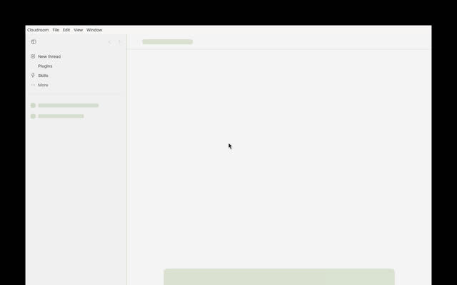

Leaderboard / #8 of 13 / Installed or launched
Cloudroom
People who want agents to keep running after the laptop lid closes, on infrastructure they own.
Weighted feature assessment72.0range 62.0 to 82.0doc coverage 80% / Launchedmeasured: Launch probe
Scores by category
Rubric breakdown
- AAgent breadthweight 154
- BIsolation and parallelismweight 154
- CReview, merge and PR flowweight 15n/r
- DRemote, cloud and mobile reachweight 105
- EOpenness and licenseweight 105
- FMaturity and momentumweight 153
- GLinux setup friction (measured)weight 102
- HPricing and BYO modelweight 55
- IDocs and transparencyweight 5n/r
Verdict
Strengths and weaknesses
Strengths
- Teleport a running session to a VM with the same model and effort
- Apache-2.0 core and GUI, self-hostable
- Ships releases daily
Weaknesses
- Core install needs root, systemd and a fresh Ubuntu 24.04 VM
- Review and PR flow unverified
- Public feud with T3 Code's author is noise to tune out
Evidence
What we saw and where it came from
- Hands-on (this box)
- GUI AppImage launched (3.3 s, 795 MB). Core not installed: its installer needs root + systemd on a fresh VM, which we did not do on a shared box.
- Launch probe
- First window 3.3 s, process-tree RSS 795 MB on Xvfb.
- Notes
- Open dispute on X (Oct 18 2026) between David Ondrej and Theo over a third-party tier list; we cite neither side's claims as evidence.

Sources
Feature facts
From docs, repos and our probes
- Platforms
- GUI: Linux AppImage on releases; repo text centres on Mac ('Start an agent on your Mac'). Core: Linux VM (Ubuntu 24.04 tested, systemd + cgroup v2, root install)
- Supported agents
- Repo: Claude Code, Codex, Pi. Maker's post (Sep 2026): also Cursor, OpenCode, Grok Build, Hermes Agent
- Parallelism
- Sessions run on cloud VMs; 'teleport' a running local session to a VM keeping model and effort
- Isolation
- Per-VM / cgroup (install script requires cgroup v2); details not verified
- Review, merge, PR
- unknown
- Remote, cloud, mobile
- Strong by design: cloud VM execution, sessions sync to phone (maker's post)
- MCP
- unknown
- Cost visibility
- unknown
- Model choice
- BYO subscriptions, harness, model, inference provider
- Setup
- GUI app + self-hosted core (`sudo bash install.sh` on a fresh Ubuntu 24.04 VM)
"unknown" means we found no source and did not guess.